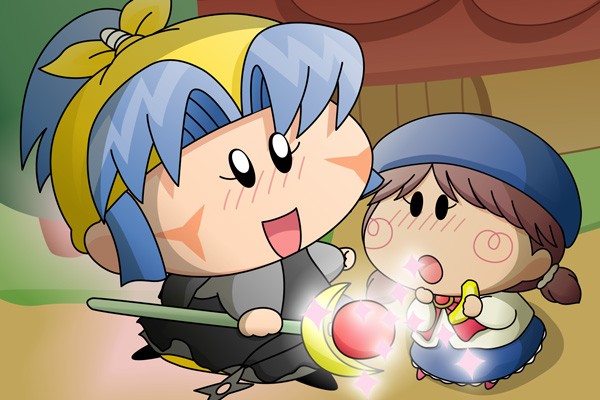

「ヤマネでポン！」
まぶしい光の中から杖を持った女の子が現れました。
杖からはまぶしい光を放ち、マンボを暖かくつつみます。
マンボは気を失ったまま、ぷかぷかと地面の上を浮かんでいます。

ソフトはギャアとともにゆっくり地面に降り立つと、しばらくぼーっとその光景を眺めていました。
杖からの光とともにマンボが地面にゆっくりと横たわります。
ちょっと変わった黒い服を着ている女の子も空から舞い降りてきました。
ソフト「あなたはどちら様ぽよ？」
ヤマネ「私は魔女のヤマネと申します。
たった今、５０年もの長い封印から目覚めたでございます」
ソフト「ふ～いん？」
ヤマネ「あなたが集めた７つのダイヤが私にかけられた封印を
解いてくれたのでございます」
ソフト「ダイヤにそんな力があったなんて知らなかったぽよ」
ヤマネ「きっと私を封印から解かせないためにそのことは隠されて
いたのでございますね」
ソフト「はっ・・・そうぽよ。
願いごとぽよ！
７つのダイヤが揃うと願いごとがかなうぽよ」
ヤマネ「願いごとなら先ほど・・・」
ソフト「ぽよ？・・もしかして・・・」
ヤマネ「申し訳ございません。
魔力を使ってしまったのでもう願いごとは・・・」
そんな・・・とショックを受けるソフトでした。
ヤマネ「代わりにですが、前に読んだことのある恋の作法書に従って、
恋をかなえる呪文をかけることができるでございます」
ソフト「恋・・・ぽよ？」
ヤマネ「お相手は・・・あちらの方でございますね」
ソフト「ぽよよっ？」
ヤマネ「ヤマネでポン！」
突然のことにうろたえるソフトと横たわっているマンボとの間に一筋の光が走りました。
ヤマネ「これで大丈夫！」
マンボ「う、う～ん・・・」
ソフト「まずいぽよ、マンボくんが起きちゃうぽよ」
ヤマネ「？？」
ソフト「ちょっと着替えてくるぽよ～っ」
そう言ってソフトは草むらでわずか１秒の早着替えを行い、怪盗チョコソフトからいつものソフトへと変身するのでした。
何だかストーリーがだんだん違う方向へと進んでいるような気もしますが、ちゃんと終盤に向かってはいます(^◇^;)。とはいえ、せっかく登場した新キャラのヤマネをあまり活躍させないのももったいないので、もう少し寄り道してしまうかもしれません。
７つのダイヤの効果はすごくありきたりになってしまいましたが、代わりにヤマネが行ったソフトとマンボをくっつける仕掛けが私の一番やりたかったことだったりします。果たしてソフトとマンボの運命はいかに！？
(2007/6/30)